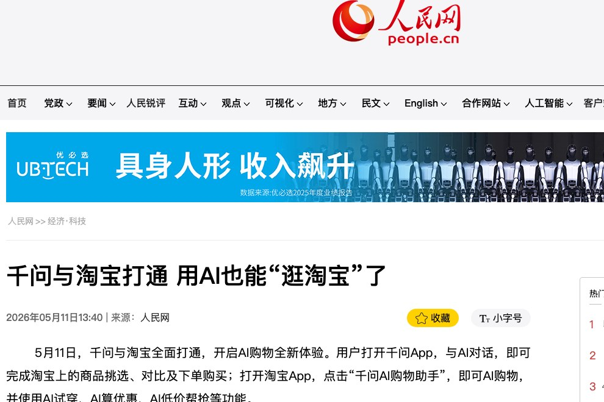
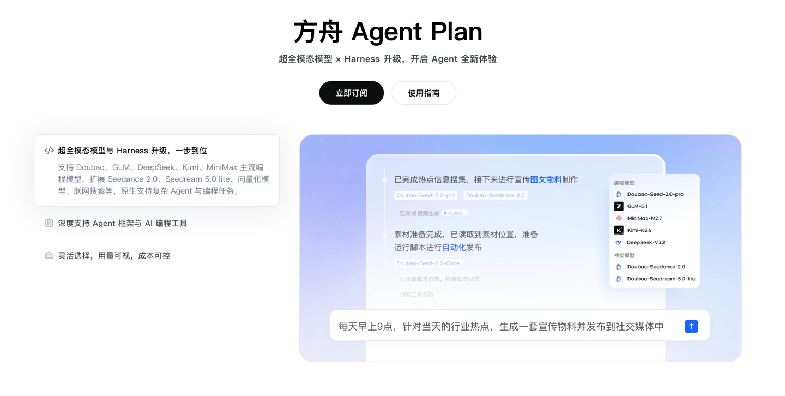
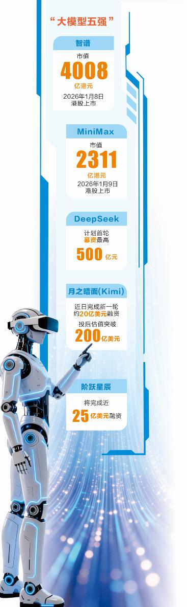
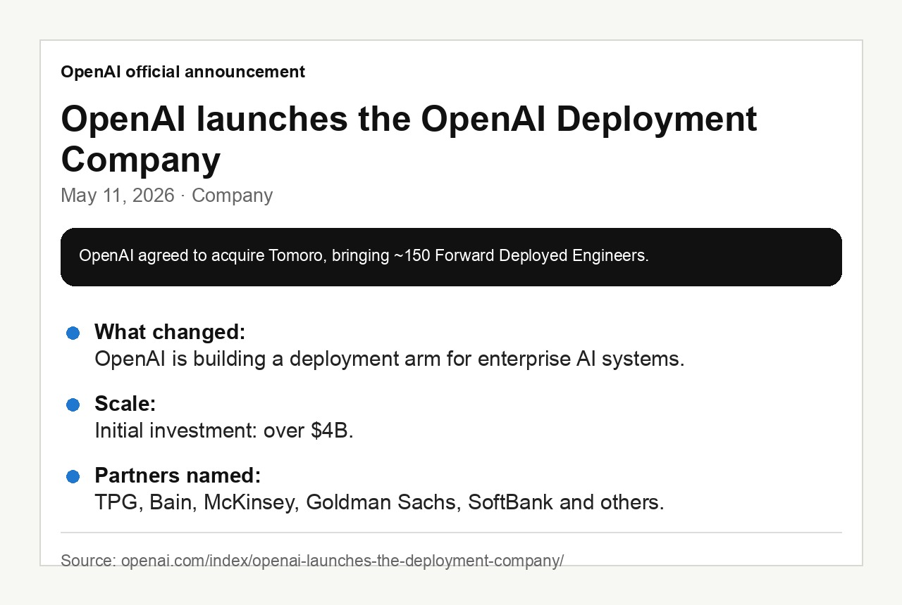

SuuJiKat AI Daily
AI 今天不在聊天框里：阿里进交易，字节打套餐，OpenAI 做交付
2026-05-12 · AIGC 今日观察
今天只收有明确时间来源的线索：北京时间 5 月 12 日的新报道，以及美国时间 5 月 11 日的官方发布。
今天的共同信号很清楚：
AI 公司正在离开“聊天框展示能力”的阶段，开始抢真实流程。
阿里把千问接进淘宝，字节把模型和工具打成 Agent 套餐，国产大模型公司被放到估值和商业化的天平上，OpenAI 则直接成立企业部署公司。
模型还在变强，但今天真正值得看的不是“谁又发了一个模型”，而是：AI 能不能进入交易、开发、企业管理和资本市场这些更硬的环节。
今日目录
01｜阿里：千问接入淘宝，AI 开始进入购物动作
02｜字节：火山引擎 Agent Plan，把模型和工具打成套餐
03｜国产大模型五强：估值故事开始接受商业化拷问
04｜OpenAI：成立 Deployment Company，把模型卖成企业交付
今天的一个判断：AI 的下一阶段，不是更会聊天，而是更会进入流程
01｜阿里：千问接入淘宝，AI 开始进入购物动作

图：人民网原文页面截图。
5 月 11 日，千问与淘宝全面打通。人民网报道称，用户打开千问 App，与 AI 对话，就可以完成淘宝上的商品挑选、对比和下单购买；打开淘宝 App，点击“千问 AI 购物助手”，也可以使用 AI 试穿、AI 算优惠、AI 低价帮抢等功能。
每日经济新闻 5 月 12 日的商业早参也把这条列在第一条，给出的判断是：阿里把千问嵌入淘宝交易闭环，是 AI 电商从“营销工具”向“操作系统”跃迁的一步。
SuuJiKat 判断
这不是“AI 帮你搜商品”，而是 AI 开始接管一段消费动作。
过去电商的路径是搜索、筛选、比价、看评价、领券、下单。每一步都在消耗用户的注意力。千问接入淘宝之后，阿里的优势不是单纯有一个聊天机器人，而是它手里本来就有商品库、交易链路、支付体系、商家供给和真实消费数据。
这类 AI 应用以后真正拼的，不是回答得多像人，而是能不能把“我想买什么”变成“我已经安全地买到了合适的东西”。
02｜字节：火山引擎 Agent Plan，把模型和工具打成套餐

图：新浪科技转载 IT 之家文章中的原生图片。
5 月 11 日，火山引擎正式发布 Agent Plan；5 月 12 日的每日经济新闻 / 东方财富商业早参也把它放进了当天线索。新浪科技转载 IT 之家报道称，这个计划相比 Coding Plan，不只是提供主力编程模型的订阅服务，而是在此基础上新增更多模态模型和 Harness 工具。
报道中提到，Agent Plan 包含 Doubao-Seed、Doubao-Seedance、Doubao-Seedream 等字节跳动系列模型，也包含 GLM-5.1、Kimi-K2.6 等第三方模型，并提供联网搜索等 Harness 工具。它还适配 Claude Code、OpenCode、TRAE、OpenClaw、Hermes Agent 等编程和 Agent 平台。
这条和阿里那条其实是同一种方向。
阿里是在消费场景里把 AI 放进交易闭环；字节是在开发者和 Agent 场景里，把模型、工具、搜索和计费打包成一个可调用的资源层。
SuuJiKat 判断
Agent 的竞争会越来越像“工作台竞争”，不是单模型竞争。
开发者真正需要的不是打开十个模型控制台，而是一个稳定、可计费、可切换、能调用工具的执行环境。模型能力当然重要，但当模型差距缩小时，谁能把模型接进更多工具、更多平台、更多自动化链路，谁就更接近真实使用。
这也解释了为什么 Claude Code、Codex、OpenClaw 这类工具会突然变得重要：它们不是聊天产品，而是把想法转成行动的界面。
03｜国产大模型五强：估值故事开始接受商业化拷问

图：东方财富转载证券时报文章中的原生信息图。
证券时报 5 月 12 日发布文章《千亿估值之上，“大模型五强”直面商业大考》，讨论 DeepSeek、月之暗面 Kimi、阶跃星辰、智谱、MiniMax 这批国产大模型公司正在面对的资本与商业化问题。
这篇文章里有很多融资和估值信息，其中不少属于市场消息和媒体报道，不能直接当作官方确认。但它反映了一个现实：国产大模型公司已经不只是被技术圈讨论，也开始被资本市场按收入、亏损、估值、融资窗口和商业化路径来审视。
SuuJiKat 判断
大模型公司的叙事，正在从“谁更聪明”变成“谁能撑得住”。
训练要钱，推理要钱，人才要钱，产品化要钱。模型公司如果只靠一次发布会获得注意力，很快会被下一次发布会覆盖。真正难的是把能力变成持续收入，把能力嵌进行业流程，把成本压到可以长期运行。
所以今天再看国产 AI，不应该只问“谁的模型参数更大、榜单更高”，还要问：它能不能稳定服务用户？它有没有真实收入？它的工具生态和开发者入口在哪里？
它能不能把一次技术领先，变成一套可以长期复用的商业系统？
04｜OpenAI：成立 Deployment Company，把模型卖成企业交付

图：OpenAI 官方公告信息整理。原网页本地截图时触发人机验证，因此这里用官方文本做成证据卡。
美国时间 5 月 11 日，OpenAI 官方宣布成立 OpenAI Deployment Company。
官方公告写得很直接：这是一家帮助组织构建和部署 AI 系统的新公司。OpenAI 同时同意收购 Tomoro，把约 150 名 Forward Deployed Engineers 和部署专家带入这家公司。
公告还提到，OpenAI Deployment Company 会有超过 40 亿美元初始投资，并由 TPG、Advent、Bain Capital、Brookfield 等机构参与；Bain & Company、Capgemini、McKinsey & Company 等咨询和系统集成公司也在其中。
这件事的意思不是“OpenAI 又多了一个部门”。
SuuJiKat 判断
OpenAI 开始承认，企业买模型还不够，企业要的是把模型部署进真实业务。
很多公司已经试过 AI，但卡在数据、权限、流程、组织协作、风控和交付上。一个 API 可以展示能力，但不能自动重写企业流程。OpenAI 现在要做的，是把工程师送进企业现场，帮客户找到高价值流程，再把 AI 系统真正落地。
这和今天国内的两条线索放在一起看，非常有意思：阿里在交易场景里做闭环，字节在 Agent 场景里做套餐，OpenAI 在企业场景里做交付。
它们其实都在回答同一个问题：模型能力怎样从“可以演示”，变成“可以使用”。
今天的一个判断
今天这几条新闻放在一起，像是 AI 行业的一次集体转身。
过去两年，大家讨论最多的是模型：参数、榜单、上下文长度、多模态、推理能力。
但 2026 年 5 月 12 日这一天能看到的信号是：AI 的下一阶段，不是更会聊天，而是更会进入流程。
千问进入淘宝，是进入消费流程。
火山引擎 Agent Plan，是进入开发和 Agent 流程。
国产大模型五强被审视，是进入资本和商业化流程。
OpenAI Deployment Company，是进入企业运营流程。
对普通创作者和 AI 使用者来说，这意味着一个很现实的变化：以后判断一个 AI 产品，不能只看它回答得漂不漂亮，而要看它能不能完成动作。
· 能不能替你比对。
· 能不能替你调用工具。
· 能不能替你交付结果。
· 能不能在反复使用中沉淀成工作流。
这也和 SuuJiKat 一直在说的 Harmony 工作流有关。
人类接近智慧有两条路：不断实验，或者依靠直觉。
现在大多数 AI 应用真正改变的，是第一条路。
它让普通人能够更便宜、更快、更频繁地试错。你可以让模型搜索、比较、写代码、改稿、生成图、跑流程，再从反馈里逼近一个更好的答案。
但直觉不会因此消失。
相反，越是流程被 AI 接管，人越需要判断：什么值得做，什么不值得做；哪里该交给机器重复，哪里必须由人给出方向。
当 AI 越来越能行动，人类的价值会更集中在判断动作是否值得发生。
来源
东方财富 / 每日经济新闻：《千问与淘宝打通；山姆回应南京欠租 887 万元｜未来商业早参》
新浪科技 / IT 之家：《字节火山引擎 Agent Plan 发布：业界首个“Agent 套餐包”，每月 40 元起》
新浪财经 / 证券时报：《千亿估值之上 “大模型五强”直面商业大考》
OpenAI：《OpenAI launches the OpenAI Deployment Company to help businesses build around intelligence》